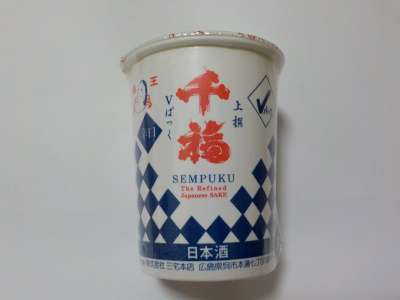
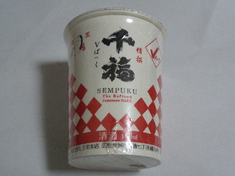
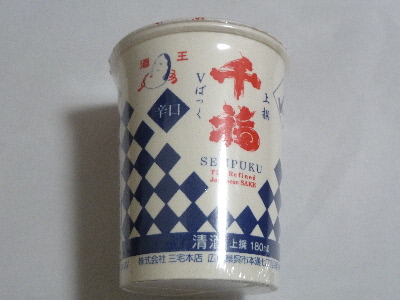

三宅本店の千福上撰Vパック
2021/08/21

甘くて美味しい。お米感はあまりないですが、日本酒味です。
さらっとした感じで飲みやすかったです。
広島県呉市本通7丁目9番10号
2021/08/21

甘くて美味しい。お米感はあまりないですが、日本酒味です。
さらっとした感じで飲みやすかったです。
2017/11/12
私にはちょっと味が濃ゆ過ぎでした。

夏場だったら氷を入れて飲みたいかも？
でも今はもう寒い季節なので、それはやらない。
どちらかと言うと、千福の青いパッケージの方がいいかな。
2017/10/30
広島の日本酒を飲んでみました。

希望小売価格は200円（税別）みたいですが、コスモスでそれより安く販売していました。
甘くも辛くもなく、スッキリとしていて、クセもなく飲みやすかったです。
日本酒の真ん中的な味なのかな？
この千福のカップ酒には甘口の赤パッケージもあるので、こんどはそっちもも飲んでみたいと思いました。